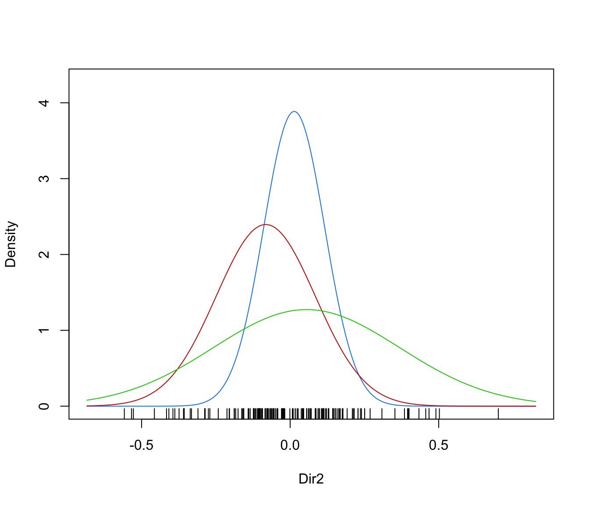
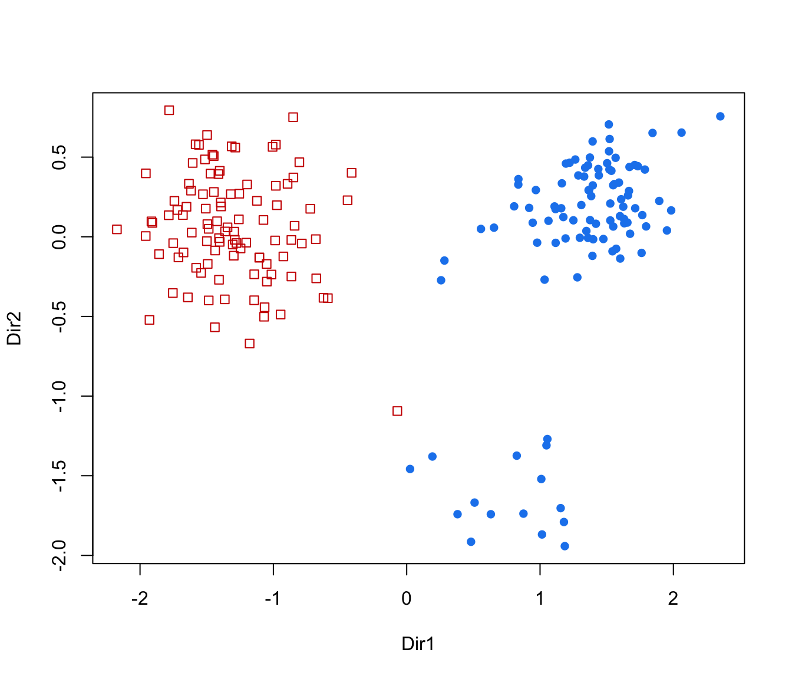
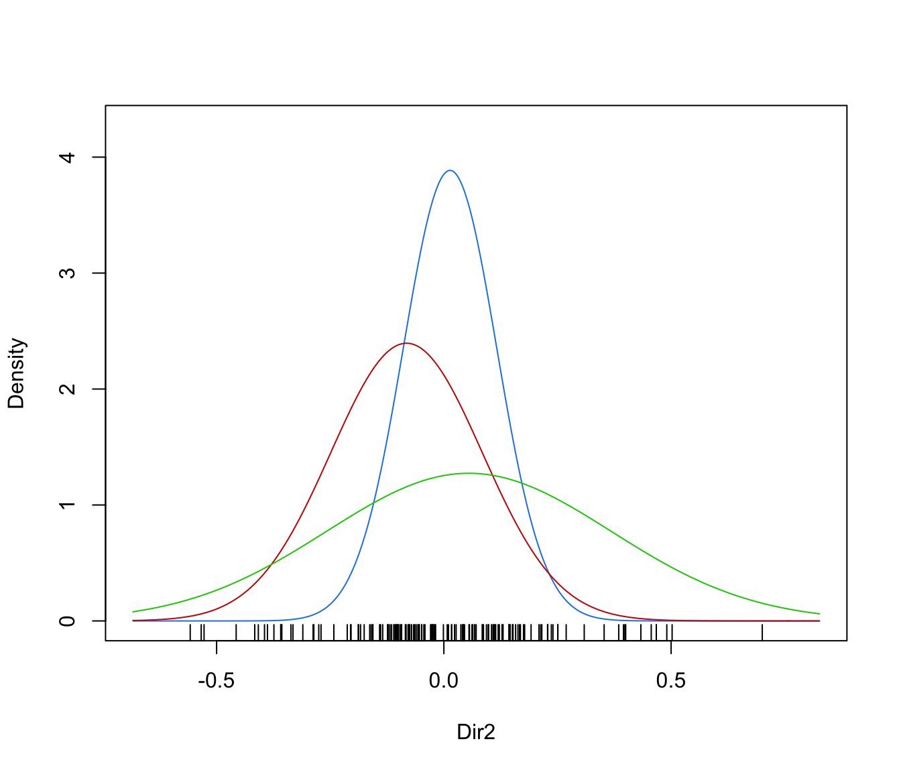
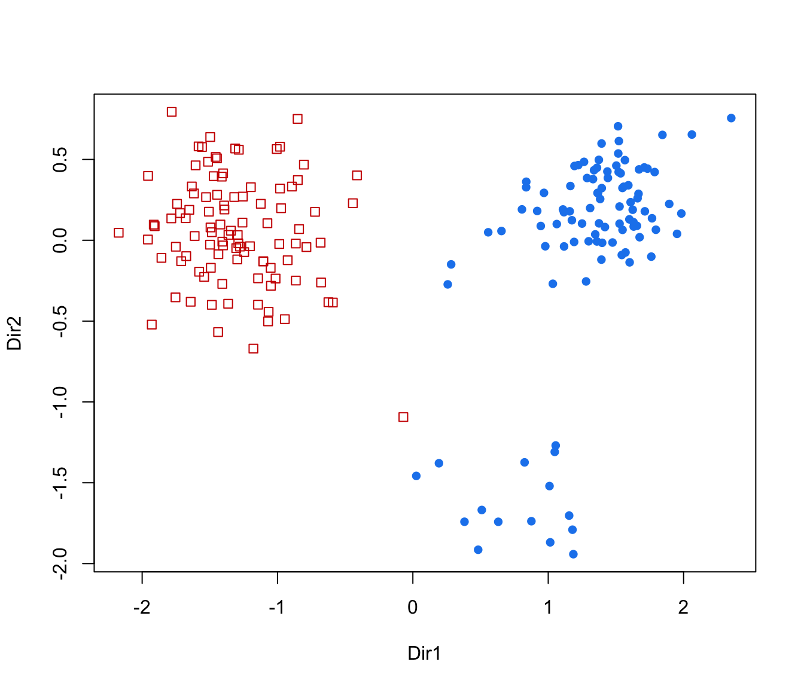
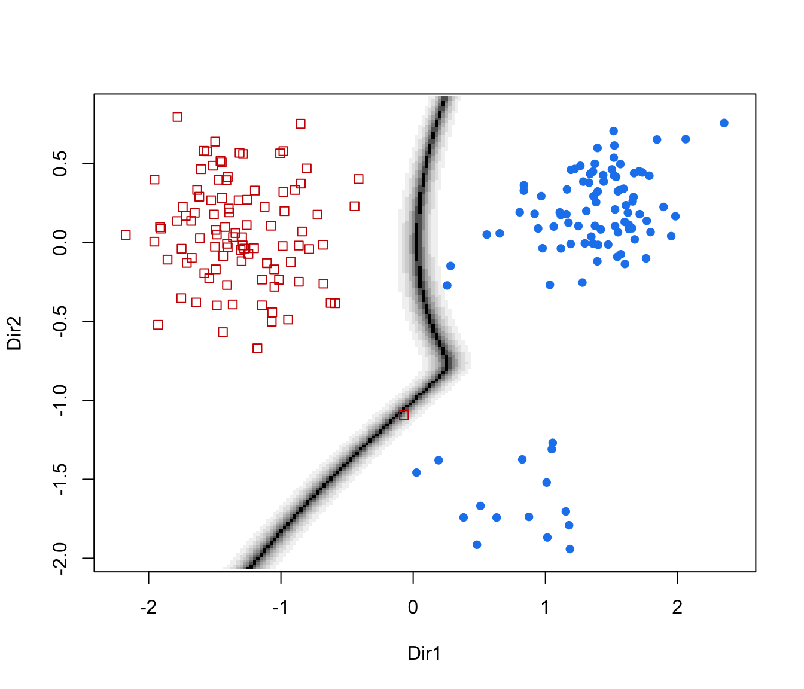
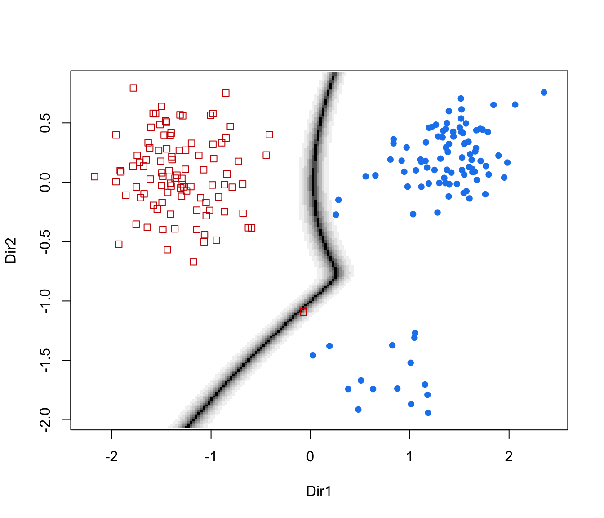

Plotting method for dimension reduction for model-based clustering and classification
plot.MclustDR.RdGraphs data projected onto the estimated subspace for model-based clustering and classification.
Arguments
- x
An object of class
'MclustDR'resulting from a call toMclustDR.- dimens
A vector of integers giving the dimensions of the desired coordinate projections for multivariate data.
- what
The type of graph requested:
"scatterplot"=a two-dimensional plot of data projected onto the first two directions specified by
dimensand with data points marked according to the corresponding mixture component. By default, the first two directions are selected for plotting."pairs"=a scatterplot matrix of data projected onto the estimated subspace and with data points marked according to the corresponding mixture component. By default, all the available directions are used, unless they have been specified by
dimens."contour"=a two-dimensional plot of data projected onto the first two directions specified by
dimens(by default, the first two directions) with density contours for classes or clusters and data points marked according to the corresponding mixture component."classification"=a two-dimensional plot of data projected onto the first two directions specified by
dimens(by default, the first two directions) with classification region and data points marked according to the corresponding mixture component."boundaries"=a two-dimensional plot of data projected onto the first two directions specified by
dimens(by default, the first two directions) with uncertainty boundaries and data points marked according to the corresponding mixture component. The uncertainty is shown using a greyscale with darker regions indicating higher uncertainty."density"=a one-dimensional plot of estimated density for the first direction specified by
dimens(by default, the first one). A set of box-plots for each estimated cluster or known class are also shown at the bottom of the graph.
- symbols
Either an integer or character vector assigning a plotting symbol to each unique mixture component. Elements in
colorscorrespond to classes in order of appearance in the sequence of observations (the order used by the functionfactor). The default is given bymclust.options("classPlotSymbols").- colors
Either an integer or character vector assigning a color to each unique cluster or known class. Elements in
colorscorrespond to classes in order of appearance in the sequence of observations (the order used by the functionfactor). The default is given bymclust.options("classPlotColors").- col.contour
The color of contours in case
what = "contour".- col.sep
The color of classification boundaries in case
what = "classification".- ngrid
An integer specifying the number of grid points to use in evaluating the classification regions.
- nlevels
The number of levels to use in case
what = "contour".- asp
For scatterplots the \(y/x\) aspect ratio, see
plot.window.- ...
further arguments passed to or from other methods.
References
Scrucca, L. (2010) Dimension reduction for model-based clustering. Statistics and Computing, 20(4), pp. 471-484.
See also
Examples
# \donttest{
mod <- Mclust(iris[,1:4], G = 3)
dr <- MclustDR(mod, lambda = 0.5)
plot(dr, what = "evalues")
plot(dr, what = "pairs")
 plot(dr, what = "scatterplot", dimens = c(1,3))
plot(dr, what = "scatterplot", dimens = c(1,3))
 plot(dr, what = "contour")
plot(dr, what = "contour")
 plot(dr, what = "classification", ngrid = 200)
plot(dr, what = "classification", ngrid = 200)
 plot(dr, what = "boundaries", ngrid = 200)
plot(dr, what = "boundaries", ngrid = 200)
 plot(dr, what = "density")
plot(dr, what = "density")
 plot(dr, what = "density", dimens = 2)

data(banknote)
da <- MclustDA(banknote[,2:7], banknote$Status, G = 1:3)
dr <- MclustDR(da)
plot(dr, what = "evalues")
plot(dr, what = "pairs")

plot(dr, what = "contour")
plot(dr, what = "density", dimens = 2)

data(banknote)
da <- MclustDA(banknote[,2:7], banknote$Status, G = 1:3)
dr <- MclustDR(da)
plot(dr, what = "evalues")
plot(dr, what = "pairs")

plot(dr, what = "contour")
 plot(dr, what = "classification", ngrid = 200)
plot(dr, what = "classification", ngrid = 200)
 plot(dr, what = "boundaries", ngrid = 200)

plot(dr, what = "density")
plot(dr, what = "boundaries", ngrid = 200)

plot(dr, what = "density")
 plot(dr, what = "density", dimens = 2)
plot(dr, what = "density", dimens = 2)
 # }
# }